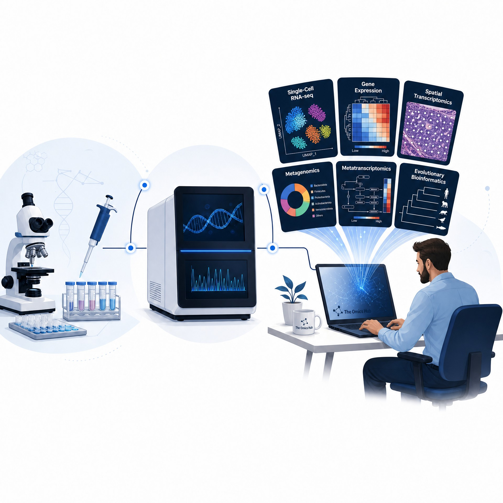
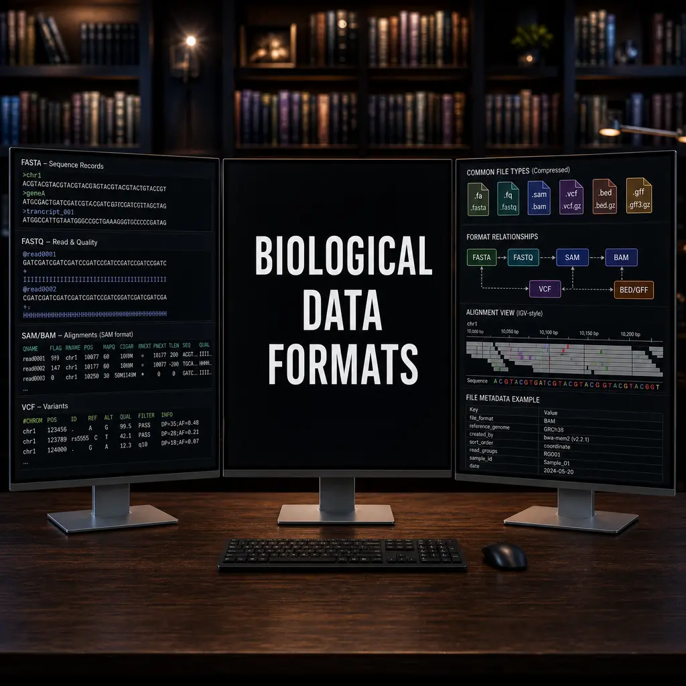
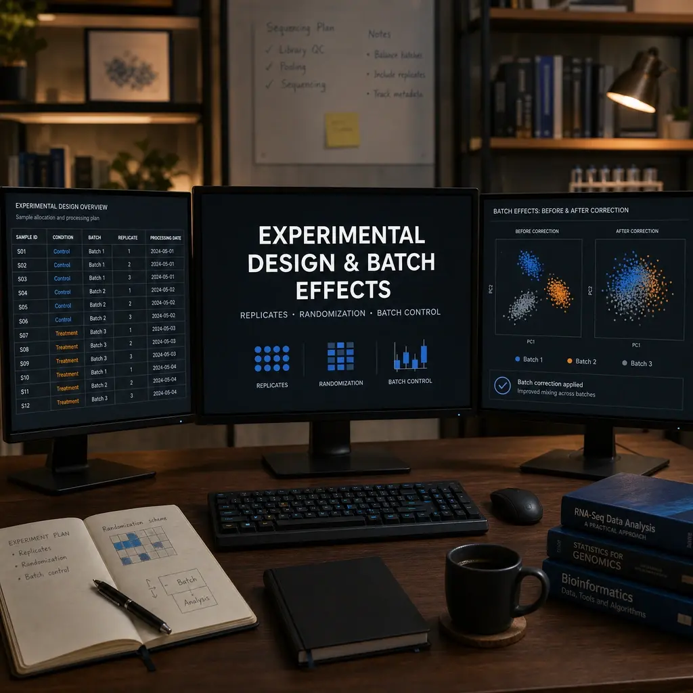
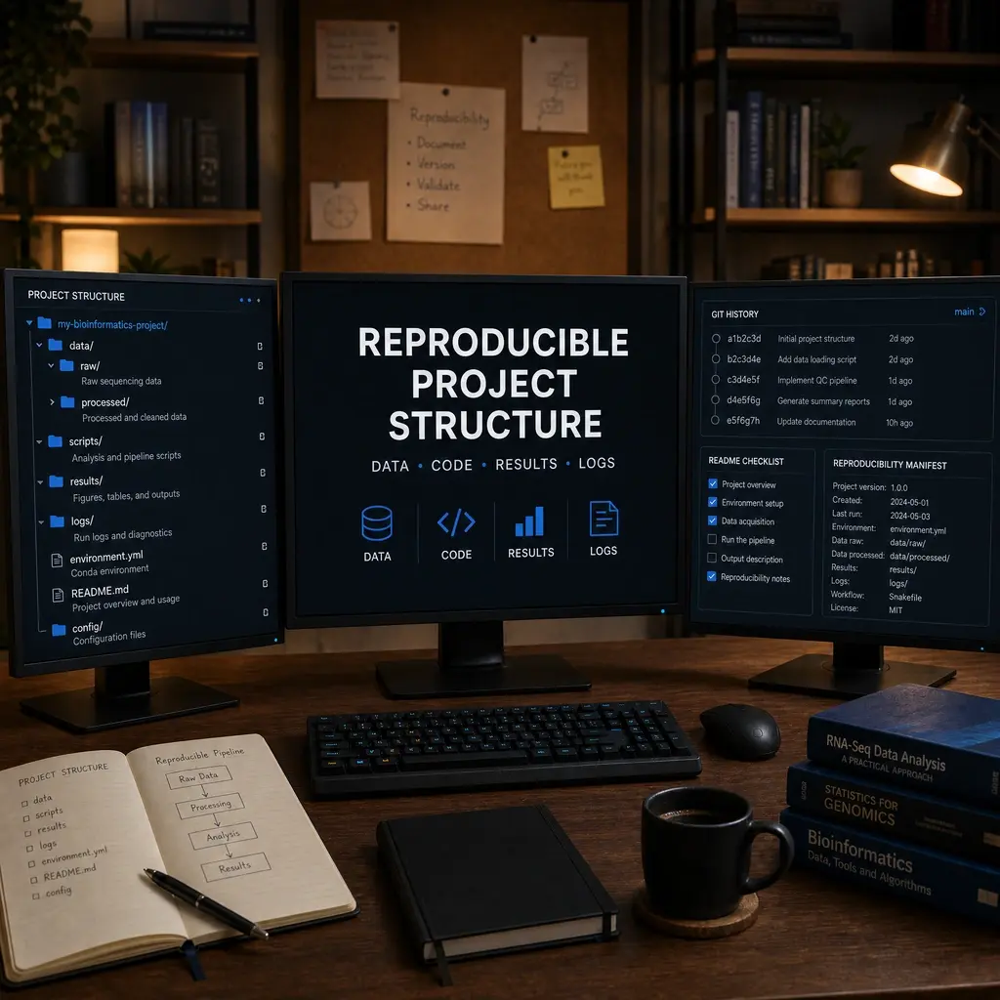
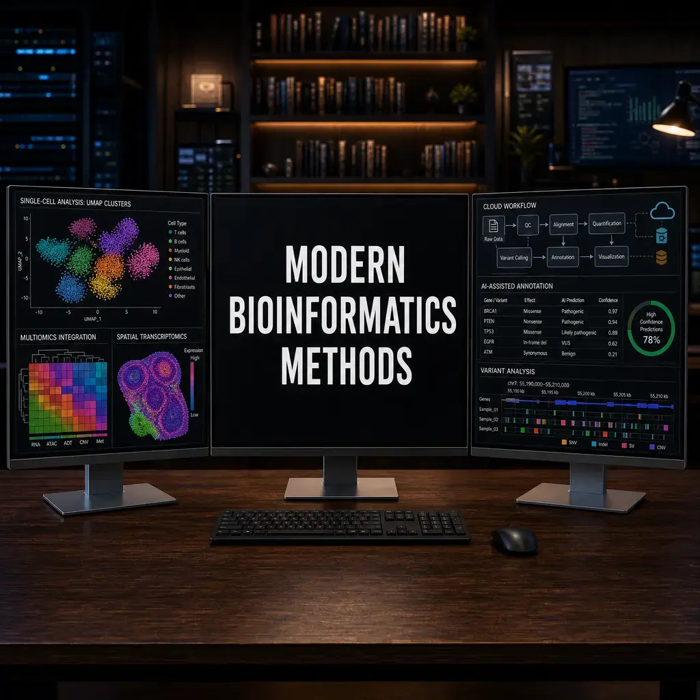
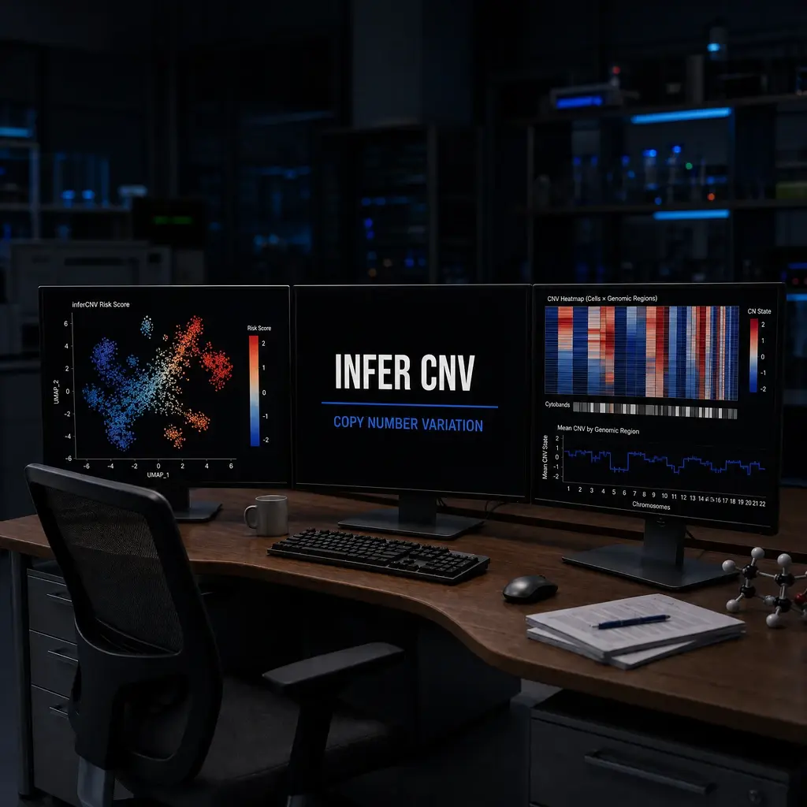
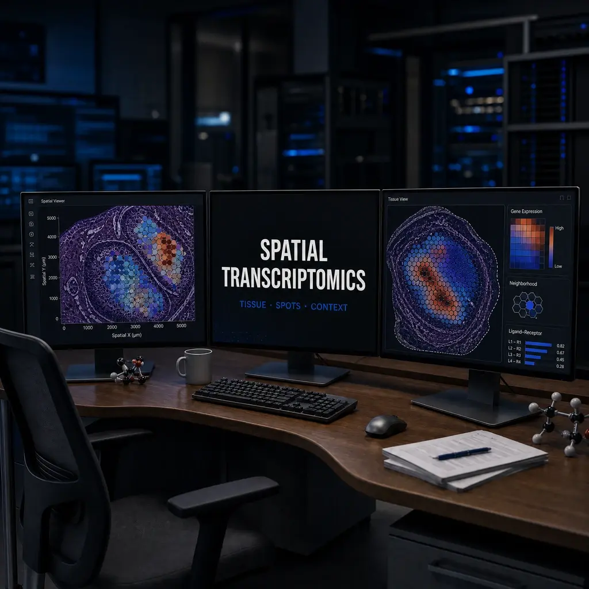

The
Omics Hub
A bioinformatics workflow hub with step-by-step guides for the Linux command line, HPC clusters, Conda environments, and single-cell RNA-seq analysis. Built for biologists learning computational methods.
Explore Tutorials →
Latest Tutorials
Step-by-step guides covering shell scripting, HPC, Conda, and single-cell RNA-seq.
Computer and Data Fundamentals for Biologists
Learn how computers store, process, and move biological data before using Linux, HPC, and omics workflows.
Read More →
Biological Data Formats
Read FASTA, FASTQ, SAM/BAM, VCF, GTF/GFF, and count matrices with confidence before running analysis pipelines.
Read More →Quality Control Fundamentals
Understand read quality, mapping, duplication, contamination, missing data, and QC decisions across omics workflows.
Read More →Git and GitHub for Bioinformatics
Use Git and GitHub to track code, document analyses, collaborate safely, and make bioinformatics projects reproducible.
Read More →Python Fundamentals for Bioinformatics
Learn Python variables, collections, functions, files, and simple sequence processing for bioinformatics.
Read More →R and Tidyverse Fundamentals
Learn R vectors, data frames, factors, plots, and tidy data operations for biological analysis.
Read More →Statistics for Bioinformatics
Learn distributions, replicates, effect sizes, multiple testing, and statistical power for biological data analysis.
Read More →
Experimental Design and Batch Effects
Plan biological replicates, record covariates, recognize confounding, and reduce batch effects before sequencing.
Read More →Reference Genomes and Annotation Databases
Choose genome builds, transcript versions, identifiers, and reproducible annotation sources for analysis.
Read More →Data Visualization Fundamentals
Read QC plots, PCA, heatmaps, UMAPs, and volcano plots without overstating biological conclusions.
Read More →
Reproducible Project Structure
Organize data, scripts, results, logs, environments, and metadata into a reproducible bioinformatics project.
Read More →Research Reporting and Interpretation
Write reproducible methods, figure legends, limitations, and evidence-based biological interpretations.
Read More →
Introduction to Bioinformatics
Learn the fundamentals of bioinformatics and discover how computational methods are revolutionizing biological research. This comprehensive tutorial covers basic concepts, essential tools, and practical workflows that every aspiring bioinformatician should know.
Read More →
Modern Methods Landscape
An evidence-based overview of the most impactful computational methods published in 2025-2026, covering single-cell foundation models, multi-omics integration, spatial transcriptomics, and long-read sequencing analysis.
Read More →Basic Navigation
Learn essential Unix/Linux commands for navigating the file system, managing directories, and handling files, which form the foundation of every bioinformatics workflow.
Read More →Text Processing
Master grep, sed, cut, and sort to filter, extract, and reshape biological data files directly from the command line.
Read More →
Advanced Shell Scripting
Build reusable bioinformatics pipelines using awk, pipes, redirects, and shell scripting best practices for reproducible research.
Read More →Conda, Mamba, and Micromamba
A complete guide to installing Conda and Mamba, creating isolated environments, and managing bioinformatics software to ensure fully reproducible analyses.
Read More →
Connecting to HPC
Set up secure SSH connections to remote HPC systems from Windows and macOS, configure MobaXterm for graphical access, and establish your working environment on the cluster.
Read More →
Basic Slurm Commands
Learn to load software modules, inspect cluster partitions and nodes, monitor running jobs with squeue, and submit your first tasks on an HPC system.
Read More →
Writing Job Scripts
Learn how to write and submit Slurm batch scripts on HPC clusters, allocate compute resources efficiently, and run parallel jobs at scale.
Read More →
Managing Resources
Learn how to diagnose common errors on HPC systems, use man pages and help flags effectively, read error logs, and know when and how to contact cluster support.
Read More →
Snakemake & Nextflow
Learn how to transition from messy bash scripts to highly scalable, reproducible bioinformatics pipelines using Snakemake and Nextflow.
Read More →
Docker & Singularity
Understand how containerization solves the dependency hell of bioinformatics, focusing on Docker for local use and Singularity for HPC clusters.
Read More →
16S rRNA and PROKKA
Learn the fundamentals of 16S rRNA amplicon sequencing techniques and how to perform rapid prokaryotic genome annotation using PROKKA.
Read More →
Metagenomics Assembly
A hands-on guide to metagenomic pipelines, covering de novo assembly with SPAdes, mapping reads with BWA, and visualizing genomic alignments in IGV.
Read More →
Taxonomic Profiling with Kraken2 and Bracken
Learn how to perform ultra-fast taxonomic classification of shotgun metagenomic reads using the k-mer based algorithms Kraken2 and Bracken.
Read More →
Metatranscriptomics Basics
A guide to analyzing metatranscriptomic data, distinguishing active from dormant microbes, and using modern tools like HUMAnN3 and SAMSA2.
Read More →
Functional Pathway Analysis with HUMAnN 3
Dive deep into metatranscriptomics by mapping active RNA transcripts to complete metabolic pathways using HUMAnN 3 and the MetaCyc database.
Read More →
Evolutionary Phylogeny
A comprehensive guide to evolutionary analysis, covering multiple sequence alignment with Kalign, tree construction, and using MEGA via the command line.
Read More →
Phylogenomics with OrthoFinder
Scale up from single-gene phylogeny to whole-genome phylogenomics by identifying orthogroups and constructing species trees using OrthoFinder.
Read More →
Whole Exome Sequencing (WES): Variant Calling & VAF
A comprehensive guide to Whole Exome Sequencing (WES) analysis, covering read alignment, variant calling, LiftOver, and Variant Allele Frequency (VAF) calculations.
Read More →
scRNA-seq Basics
A complete, production-ready single-cell RNA-seq pipeline demonstrating both Python (Scanpy) and R (Seurat) workflows. Covers standard QC, PCA, UMAP, and Leiden/Louvain clustering.
Read More →
Single-Cell Integration: Harmony, RPCA & CCA
A deep dive into resolving batch effects in single-cell data, comparing the mathematical approaches of Harmony, RPCA, and CCA for complex dataset integration.
Read More →
Downstream Analysis
Explore foundational advanced downstream analyses: mapping cell-cell communication networks, inferring Transcription Factor (TF) activities, and generating publication-ready plots (SCpubr).
Read More →Trajectory Inference
Learn the basics of inferring cellular trajectories and pseudotime using industry-standard tools like PAGA in Python and Monocle3/Slingshot in R.
Read More →
Pseudobulk DE Analysis
A comprehensive pipeline for performing differential gene expression (DGE) analysis using DESeq2 for bulk RNA-seq and adapting it for modern pseudobulk scRNA-seq approaches.
Read More →
Mathematical Quality Control (LISI & Silhouette)
Learn how to mathematically prove that your batch integration worked and your clusters are robust using LISI and Silhouette scores, rather than relying on subjective UMAP visuals.
Read More →
Advanced Visualization Packages (SCpubr, SCP, dittoSeq)
A masterclass in transforming basic Seurat plots into premium, publication-ready figures using an arsenal of modern R packages including SCpubr, scplotter, scCustomize, SeuratExtend, dittoSeq, and SCP.
Read More →
Immune Repertoire Analysis
A guide to analyzing T-cell and B-cell receptor (TCR/BCR) repertoires from single-cell data using scRepertoire to track clonal expansion in diseases like Sézary Syndrome.
Read More →
Cell-Cell Communication
Learn how to infer cell-to-cell signaling networks from scRNA-seq data using state-of-the-art tools like LIANA and CellChat.
Read More →Comprehensive Cell Type Annotation: 6 Methods + CyteTypeR
A complete guide to automated cell type annotation, comparing 6 standard algorithmic methods (SingleR, scCATCH, scmap, etc.) with the cutting-edge AI multi-agent LLM framework CyteTypeR.
Read More →
Advanced AI Cell Annotation
Move beyond manual marker gene checking. Discover how advanced AI and machine learning tools like CellTypist and Cellama are revolutionizing automated cell type annotation.
Read More →
Inferring Copy Number Variation (inferCNV)
Learn how to use inferCNV to detect large-scale chromosomal copy number alterations in single-cell RNA-seq data, essential for identifying malignant tumor cells.
Read More →
Bulk RNA-seq Deconvolution using scRNA-seq
Learn how to use high-resolution single-cell data as a reference to mathematically deconvolute the cell type proportions in massive bulk RNA-seq clinical cohorts.
Read More →
Multi-Omics: CITE-seq & WNN Integration
Learn how to process and integrate CITE-seq data, bridging the gap between RNA expression and surface protein abundance using Weighted Nearest Neighbor (WNN) analysis.
Read More →
Spatial Transcriptomics
Learn how to analyze spatial transcriptomics data to map gene expression directly onto tissue architecture, with parallel code examples in both R (Seurat) and Python (Squidpy).
Read More →
Long-Read Sequencing
A guide to analyzing long-read sequencing data from Oxford Nanopore and PacBio platforms, focusing on isoform discovery and structural variant detection.
Read More →